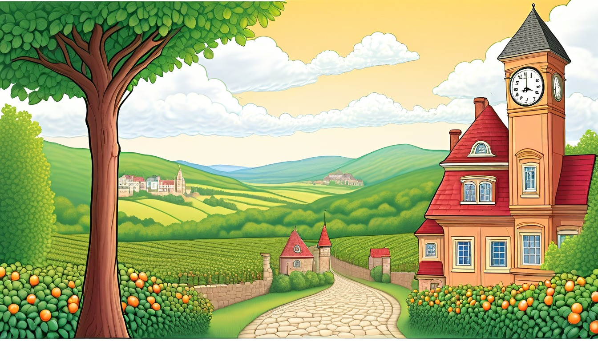

Sixteen manila folder cards help writers connect a first clue, next clue, turning clue, mismatch, return clue, and broad folder label note.
Audience: Families, homeschool groups, tutors, and adult-led writing tables for writers ages 7-11.
Format: 16 printable manila folder story clue-trail cards plus adult guide tools, clue-trail routines, take-home clue slips, and optional adult prompts
Family-safe printable writing pages for adult-led, offline clue trail practice.
$85
Included
16 printable manila folder clue trail cards
Adult setup guide
Fictional clue-trail safety notes
First clue prompts
Next clue prompts
Turning clue prompts
Mismatch and return clue prompts
Six adult-led clue-trail routines
Ten take-home clue slips
Printable PDF and ZIP artifact
Adult guide
Clue trail coaching
Manila Folder Clue Trail Adult Guide
Set out one manila folder, blank pages, pencils, and a paper clue trail card before the adult-led start: ____________________.
Choose one made-up world and remind the writer that every clue stays invented, broad, and paper-only: ____________________.
Move through first clue, next clue, turning clue, mismatch clue, return clue, and folder label in order: ____________________.
Keep the adult in charge of the folder while the child writes or dictates short page notes: ____________________.
Use pretend objects, places, and actions only; do not ask for real schedules, rooms, names, or personal facts: ____________________.
Close by reading the folder label and choosing one next-page clue for a later adult-led paper pass: ____________________.
Use one manila folder clue trail card at a time. Keep every choice broad, invented, paper-only, and guided by an adult.
World menu
Sixteen clue trail card worlds
Pick a world image, then connect one fictional page move with a pretend manila folder clue trail card.
Ages 7-8
Teacup Town Weather Window
Ages 7-9
Spoon Ferry Lunchbox Harbor
Ages 7-9
Sticker Station Mail Cart
Ages 10-11
Chapter Gate Greenhouse
Ages 7-9
Paperclip Plaza Parcel Day
Ages 8-10
Orchard Pulley Post
Ages 10-11
Appendix Archive Lab
Ages 7-9
Penny Path Compass Shop
Ages 8-10
Pantry Measurement Mystery
Ages 10-11
Blue Pencil Observatory
Ages 8-10
Rain Gauge Railway
Ages 10-11
Binding Day Boardwalk
Ages 8-10
Seed Library Map Room
Ages 7-8
Mitten Market Lost Ticket

Ages 8-10
Cloudberry Clocktower
Ages 7-9
Rain Boot Route Rangers
Clue trail routines
Choose the manila folder routine
short first-page setup
First Clue Folder Start
Manila folder, blank page, pencil, and first-clue card.
The adult opens the manila folder and points to the first clue blank: ____________________.
The child chooses one made-up object, place hint, or action: ____________________.
The adult asks how that clue starts the pretend page: ____________________.
The child writes or dictates one first clue line on paper: ____________________.
The clue trail begins with this pretend first clue: ____________________.
one-page continuation
Next Clue Step
Manila folder, current page, next blank page, and pencil.
The adult points from the first clue to the next clue blank: ____________________.
The child chooses one clue that follows on paper: ____________________.
The adult asks what should stay connected from the first clue: ____________________.
The child writes one next clue line on the page: ____________________.
The next clue follows because: ____________________.
gentle clue turn
Turning Clue Pass
Manila folder, clue card, pencil, and small paper strip.
The adult rereads the first two paper clues: ____________________.
The child invents one calm turn that changes the clue trail: ____________________.
The adult asks what the page should notice after the turn: ____________________.
The child writes the turning clue on a paper strip: ____________________.
The turning clue changes the paper trail with: ____________________.
connection check
Mismatch Check
Manila folder, two clue notes, and mismatch blank.
The adult points to one clue that almost fits the page: ____________________.
The child names what feels mismatched in the pretend trail: ____________________.
The adult asks how a new paper clue could fix the connection: ____________________.
The child writes the mismatch clue and one repair idea: ____________________.
The mismatch clue now needs this paper fix: ____________________.
continuity return
Return Clue Loop
Earlier page, blank page, pencil, and manila folder.
The adult reopens one earlier clue from the folder: ____________________.
The child chooses a pretend clue to bring back: ____________________.
The adult asks where the returning clue belongs on the next page: ____________________.
The child writes one return clue line that connects the trail: ____________________.
The return clue brings back this pretend piece: ____________________.
paper wrap pass
Folder Label Close
Manila folder, folder label slip, page stack, and pencil.
The adult lays the clue trail pages beside the manila folder: ____________________.
The child chooses a broad pretend folder label for the trail: ____________________.
The adult reads the label and asks what next-page clue it suggests: ____________________.
The child tucks the folder label slip into the manila folder: ____________________.
The folder label closes this clue trail with: ____________________.
Take-home clue slips
Try one clue trail later
Take-home clue slip
Clue slip 1
Adult: open the manila folder and ask for one pretend first clue: ____________________.
Take-home clue slip
Clue slip 2
Child: the first clue on my paper trail is: ____________________.
Take-home clue slip
Clue slip 3
Adult: point from the first clue to the next clue blank: ____________________.
Take-home clue slip
Clue slip 4
Child: the next clue should show: ____________________.
Take-home clue slip
Clue slip 5
Adult: ask what calm turning clue changes the page: ____________________.
Take-home clue slip
Clue slip 6
Child: my turning clue says: ____________________.
Take-home clue slip
Clue slip 7
Adult: ask which clue almost fits but needs a repair note: ____________________.
Take-home clue slip
Clue slip 8
Child: the mismatch clue can be fixed by: ____________________.
Take-home clue slip
Clue slip 9
Adult: reread one earlier clue and ask what can return: ____________________.
Take-home clue slip
Clue slip 10
Child: the folder label for this pretend trail is: ____________________.
Optional adult prompts
Optional adult-led paper prompt: the first clue in the manila folder is ____________________.
Optional adult-led paper prompt: the next clue follows because ____________________.
Optional adult-led paper prompt: the turning clue changes the page when ____________________.
Optional adult-led paper prompt: the mismatch clue needs this repair ____________________.
Optional adult-led paper prompt: the return clue brings back ____________________.
Optional adult-led paper prompt: the folder label should say ____________________.
Optional adult-led paper prompt: the next page clue could be ____________________.
Optional adult-led paper prompt: the clue trail closes with ____________________.
Clue Trail Card 1 | Ages 7-8 | connect a first window clue to a next clue, turning clue, mismatch clue, return clue, and folder label
Teacup Town Weather Window Story Clue Trail Card
Teacup Town Weather Window
Adult setup: Adult: set one manila folder, blank page, pencil, and pretend weather-window clue trail card on the table: ____________________.
Writer: follow the clue trail on paper by making each Teacup Town clue pretend and broad: ____________________.
First clue
First clue: write the tiny weather sign seen through the teacup window, such as a paper cloud tag: ____________________.
Next clue
Next clue: add the paper clue that follows the first window sign inside the manila folder: ____________________.
Turning clue
Turning clue: invent the calm page moment when the weather-window clue starts to mean something new: ____________________.
Mismatch clue
Mismatch clue: name one pretend sign that almost fits the clue trail but needs a clearer page note: ____________________.
Return clue
Return clue: bring back the first weather-window sign so the later page connects to the start: ____________________.
Folder label
Folder label: write the broad pretend folder label for this Teacup Town manila folder clue trail: ____________________.
Quiet option: fill only the first clue and folder label blanks before adding more clue trail notes: ____________________. Take-home line: restart this paper clue trail later with one pretend teacup-window folder label: ____________________.
Clue Trail Card 2 | Ages 7-9 | move a spoon-ferry harbor clue from first clue to next clue, turn, mismatch, return, and folder label
Spoon Ferry Lunchbox Harbor Story Clue Trail Card
Spoon Ferry Lunchbox Harbor
Adult setup: Adult: place a manila folder, blank page, pencil, and pretend dock-token clue trail card where the writer can reach them: ____________________.
Writer: keep the spoon ferry clue trail fully invented while each clue moves across the page: ____________________.
First clue
First clue: write the pretend dock token, ferry mark, or folded harbor signal that starts the clue trail: ____________________.
Next clue
Next clue: add the paper clue that appears after the spoon ferry reaches the next made-up harbor stop: ____________________.
Turning clue
Turning clue: invent the calm moment when the dock token changes what the helper understands: ____________________.
Mismatch clue
Mismatch clue: name one pretend harbor clue that seems close but belongs on a different page note: ____________________.
Return clue
Return clue: bring back the first dock token or ferry mark with a clearer meaning: ____________________.
Folder label
Folder label: write the broad pretend folder label for this manila folder clue trail at the harbor: ____________________.
Quiet option: write only the first dock token and the return clue before the adult closes the folder: ____________________. Take-home line: continue this paper clue trail later with one spoon-ferry folder label: ____________________.
Clue Trail Card 3 | Ages 7-9 | carry a mail-cart clue through first clue, next clue, turning clue, mismatch, return, and folder label
Sticker Station Mail Cart Story Clue Trail Card
Sticker Station Mail Cart
Adult setup: Adult: set out one manila folder, blank page, pencil, and pretend sticker-sort clue trail card: ____________________.
Writer: follow the mail cart clue trail with pretend sticker slips and paper-only page notes: ____________________.
First clue
First clue: choose the first pretend sticker slip on the cart and write what it seems to mean: ____________________.
Next clue
Next clue: add the paper clue that follows when the cart reaches the next made-up station: ____________________.
Turning clue
Turning clue: invent the calm page turn when the sticker slip points to a new clue: ____________________.
Mismatch clue
Mismatch clue: name one pretend sticker mark that almost matches but needs a different clue trail note: ____________________.
Return clue
Return clue: bring back the first sticker slip so the later page connects to the first clue: ____________________.
Folder label
Folder label: write the broad pretend folder label for this Sticker Station manila folder clue trail: ____________________.
Quiet option: circle the first sticker clue and write only the folder label blank for now: ____________________. Take-home line: start another paper clue trail later with one pretend sticker-cart folder label: ____________________.
Clue Trail Card 4 | Ages 10-11 | trace a greenhouse gate clue through layered clue trail moves and a broad folder label
Chapter Gate Greenhouse Story Clue Trail Card
Chapter Gate Greenhouse
Adult setup: Adult: place the manila folder, blank page, pencil, and pretend greenhouse-gate clue trail card beside the writer: ____________________.
Writer: build the clue trail with invented gate marks, plant tags, and page notes that stay paper-only: ____________________.
First clue
First clue: write the first pretend gate mark, hinge note, or greenhouse tag that starts the page: ____________________.
Next clue
Next clue: add the paper clue that follows the gate mark deeper into the made-up greenhouse: ____________________.
Turning clue
Turning clue: invent the calm moment when the gate clue changes direction or meaning: ____________________.
Mismatch clue
Mismatch clue: name one pretend greenhouse tag that almost fits but needs a corrected page note: ____________________.
Return clue
Return clue: bring back the first gate mark so the clue trail links back to the beginning: ____________________.
Folder label
Folder label: write the broad pretend folder label for this Chapter Gate manila folder clue trail: ____________________.
Quiet option: list only the first gate clue and the return clue inside the manila folder: ____________________. Take-home line: reopen this paper clue trail later with one pretend greenhouse folder label: ____________________.
Clue Trail Card 5 | Ages 7-9 | track a clipped parcel clue from first clue to next clue, turning clue, mismatch, return, and folder label
Paperclip Plaza Parcel Day Story Clue Trail Card
Paperclip Plaza Parcel Day
Adult setup: Adult: set a manila folder, blank page, pencil, and pretend clipped-parcel clue trail card on the table: ____________________.
Writer: keep every parcel clue pretend while the clue trail moves from one paper note to the next: ____________________.
First clue
First clue: write the pretend paperclip mark or parcel tag that starts the plaza clue trail: ____________________.
Next clue
Next clue: add the page clue that follows after the parcel tag shifts, folds, or points onward: ____________________.
Turning clue
Turning clue: invent the calm moment when the clipped parcel clue points somewhere unexpected on the page: ____________________.
Mismatch clue
Mismatch clue: name one pretend parcel tag that nearly fits but belongs under a different clue trail note: ____________________.
Return clue
Return clue: bring back the first paperclip mark so the parcel page feels connected: ____________________.
Folder label
Folder label: write the broad pretend folder label for this Paperclip Plaza manila folder clue trail: ____________________.
Quiet option: write the first parcel clue and return clue, then pause the manila folder work: ____________________. Take-home line: continue this paper clue trail later with one pretend parcel-day folder label: ____________________.
Clue Trail Card 6 | Ages 8-10 | connect a pulley-post clue through clue trail turns, mismatch checking, return, and folder label
Orchard Pulley Post Story Clue Trail Card
Orchard Pulley Post
Adult setup: Adult: place a manila folder, blank page, pencil, and pretend pulley-post clue trail card beside the paper: ____________________.
Writer: follow the orchard clue trail by inventing paper pulley marks, post notes, and a broad folder label: ____________________.
First clue
First clue: write the pretend pulley mark or post tag that starts the orchard page: ____________________.
Next clue
Next clue: add the paper clue that follows when the pulley mark moves to the next made-up post: ____________________.
Turning clue
Turning clue: invent the calm page moment when the pulley clue changes the path of the clue trail: ____________________.
Mismatch clue
Mismatch clue: name one pretend post note that almost fits but needs a new paper clue: ____________________.
Return clue
Return clue: bring back the first pulley mark so the later clue connects to the start: ____________________.
Folder label
Folder label: write the broad pretend folder label for this Orchard Pulley Post manila folder clue trail: ____________________.
Quiet option: fill the first clue, return clue, and folder label blanks before adding more: ____________________. Take-home line: restart this paper clue trail later with one pretend orchard folder label: ____________________.
Clue Trail Card 7 | Ages 10-11 | track an archive clue trail through first clue, next clue, turning clue, mismatch, return clue, and folder label
Appendix Archive Lab Story Clue Trail Card
Appendix Archive Lab
Adult setup: Adult: set out one manila folder, a blank page, a pencil, and a folder label slip before the clue trail begins: ____________________.
Writer: invent an archive helper and follow the clue trail on paper without using real names, places, or facts: ____________________.
First clue
First clue: write the first pretend archive mark, such as a folded index tab, shelf dot, or margin arrow: ____________________.
Next clue
Next clue: add the paper clue that follows from the first mark inside the made-up appendix archive lab: ____________________.
Turning clue
Turning clue: show the calm moment when the archive helper learns the first clue points to a different paper drawer: ____________________.
Mismatch clue
Mismatch clue: name one clue that almost fits the drawer but needs a new note in the clue trail: ____________________.
Return clue
Return clue: bring back the first archive mark and explain how it now helps the helper connect the page: ____________________.
Folder label
Folder label: write the broad pretend folder label for this manila folder clue trail: ____________________.
Quiet option: adult points to the first archive mark, and the writer fills only the return clue blank: ____________________. Take-home line: keep the paper-only clue trail by saving one pretend archive clue under the folder label: ____________________.
Clue Trail Card 8 | Ages 7-9 | connect a simple compass clue trail with a first clue, next clue, gentle turn, mismatch, return clue, and folder label
Penny Path Compass Shop Story Clue Trail Card
Penny Path Compass Shop
Adult setup: Adult: place one manila folder beside a blank compass note, a pencil, and a folder label strip for the clue trail: ____________________.
Writer: make up a shop helper, a button compass, and a clue trail that stays on paper: ____________________.
First clue
First clue: write what the button compass points to first, such as a penny path mark or folded counter note: ____________________.
Next clue
Next clue: add the next paper clue the helper notices near the compass shop counter: ____________________.
Turning clue
Turning clue: write how the compass clue turns toward a kinder path or clearer paper mark: ____________________.
Mismatch clue
Mismatch clue: choose one pretend mark that seems close but does not match the compass clue yet: ____________________.
Return clue
Return clue: bring back the first compass point and show how it helps the final page note make sense: ____________________.
Folder label
Folder label: write the broad pretend folder label for this manila folder clue trail: ____________________.
Quiet option: adult names the button compass, and the writer writes only the next clue line: ____________________. Take-home line: continue the paper-only clue trail later by keeping one compass clue in the manila folder: ____________________.
Clue Trail Card 9 | Ages 8-10 | carry a measurement clue trail from first mark to folder label while checking a mismatch on paper
Pantry Measurement Mystery Story Clue Trail Card
Pantry Measurement Mystery
Adult setup: Adult: set out one manila folder, a blank measurement page, a pencil, and a folder label slip for the clue trail: ____________________.
Writer: invent a shelf helper, a measuring ribbon, and a made-up clue trail that stays broad and paper-only: ____________________.
First clue
First clue: write the first pretend measuring mark, such as three tiny ticks on a ribbon strip: ____________________.
Next clue
Next clue: add the next shelf note that follows from the measuring mark on the paper page: ____________________.
Turning clue
Turning clue: show how the helper notices the measuring mark points to a different paper tag than expected: ____________________.
Mismatch clue
Mismatch clue: write one shelf tag that almost matches the ribbon clue but needs another clue trail note: ____________________.
Return clue
Return clue: bring back the first measuring mark and explain how it helps sort the pretend mystery: ____________________.
Folder label
Folder label: write the broad pretend folder label for this manila folder clue trail: ____________________.
Quiet option: adult circles the measuring mark, and the writer fills only the mismatch blank: ____________________. Take-home line: save one paper measuring clue in the manila folder and restart the clue trail later: ____________________.
Clue Trail Card 10 | Ages 10-11 | manage a longer observatory clue trail by linking first clue, next clue, turning clue, mismatch, return clue, and folder label
Blue Pencil Observatory Story Clue Trail Card
Blue Pencil Observatory
Adult setup: Adult: open the manila folder, add a blank sky chart page, and place a folder label slip beside the clue trail card: ____________________.
Writer: invent an observatory helper and use paper clues only as the blue pencil clue trail changes: ____________________.
First clue
First clue: write the first blue pencil mark on the pretend sky chart, such as a tiny arrow or ring: ____________________.
Next clue
Next clue: add the next paper chart clue that follows from the first blue pencil mark: ____________________.
Turning clue
Turning clue: write the moment the helper realizes the chart mark points to a new paper corner: ____________________.
Mismatch clue
Mismatch clue: name one sky chart mark that looks useful but does not fit the clue trail yet: ____________________.
Return clue
Return clue: bring back the first blue pencil mark and show how the new clue explains it: ____________________.
Folder label
Folder label: write the broad pretend folder label for this manila folder clue trail: ____________________.
Quiet option: adult points to the sky chart mark, and the writer writes only the turning clue sentence: ____________________. Take-home line: tuck one paper chart clue into the manila folder under the folder label: ____________________.
Clue Trail Card 11 | Ages 8-10 | build a railway clue trail by following a gauge note through mismatch and return clue before the folder label
Rain Gauge Railway Story Clue Trail Card
Rain Gauge Railway
Adult setup: Adult: set one manila folder beside a blank rail note, a pencil, and a folder label strip for the clue trail: ____________________.
Writer: make up a railway helper, a rain gauge ticket, and a paper-only clue trail with no real trip details: ____________________.
First clue
First clue: write the first pretend gauge mark the helper finds on a small rail ticket: ____________________.
Next clue
Next clue: add the next paper rail clue that follows from the gauge mark: ____________________.
Turning clue
Turning clue: show how a track note changes what the gauge mark means in the clue trail: ____________________.
Mismatch clue
Mismatch clue: write one rail card mark that almost fits but sends the helper back to check the page: ____________________.
Return clue
Return clue: bring back the first gauge mark and show how the helper connects it to the final rail note: ____________________.
Folder label
Folder label: write the broad pretend folder label for this manila folder clue trail: ____________________.
Quiet option: adult names the gauge mark, and the writer fills only the return clue blank: ____________________. Take-home line: keep one pretend gauge clue in the manila folder so the paper clue trail can continue later: ____________________.
Clue Trail Card 12 | Ages 10-11 | connect a binding clue, a shifted page clue, a turning clue, a mismatch clue, a return clue, and a folder label
Binding Day Boardwalk Story Clue Trail Card
Binding Day Boardwalk
Adult setup: Adult: set out one manila folder, blank page, pencil, and this clue trail card beside a pretend boardwalk page stack: ____________________.
Writer: follow the clue trail on paper and keep every boardwalk detail invented, broad, and guided by the adult: ____________________.
First clue
First clue: choose the loose page, ribbon mark, or binding cart detail that starts the boardwalk clue trail: ____________________.
Next clue
Next clue: add the paper clue that follows beside the boardwalk binding table in the manila folder: ____________________.
Turning clue
Turning clue: invent the calm moment when the page stack changes what the first clue seems to mean: ____________________.
Mismatch clue
Mismatch clue: name one pretend ribbon, page mark, or cart label that almost fits but needs a new paper note: ____________________.
Return clue
Return clue: bring back the first binding clue and show why it belongs in this clue trail: ____________________.
Folder label
Folder label: write the broad pretend folder label for the Binding Day Boardwalk manila folder: ____________________.
Quiet option: write only the binding clue, the return clue, and one folder label word for the clue trail: ____________________. Take-home line: save the paper in the manila folder and restart the clue trail later with one new boardwalk clue: ____________________.
Clue Trail Card 13 | Ages 8-10 | carry a made-up map-room clue through a first clue, next clue, turning clue, mismatch clue, return clue, and folder label
Seed Library Map Room Story Clue Trail Card
Seed Library Map Room
Adult setup: Adult: place this card, a manila folder, blank paper, and pencil beside a pretend map-room shelf note: ____________________.
Writer: with the adult, move through the clue trail one paper clue at a time and keep the map room invented: ____________________.
First clue
First clue: choose the seed drawer mark, map corner symbol, or shelf tag that begins the clue trail: ____________________.
Next clue
Next clue: add the next paper clue that points from the first map-room mark to a different pretend shelf: ____________________.
Turning clue
Turning clue: invent the calm page moment when the map-room clue points to a surprising paper corner: ____________________.
Mismatch clue
Mismatch clue: write one seed drawer mark or map symbol that almost matches but needs a clearer note: ____________________.
Return clue
Return clue: bring back the first map-room mark and explain how it connects the clue trail: ____________________.
Folder label
Folder label: write the broad pretend folder label for this Seed Library Map Room manila folder: ____________________.
Quiet option: copy one map-room mark, one next clue, and one folder label word before adding more: ____________________. Take-home line: tuck the page into the manila folder and add one invented map-room clue later: ____________________.
Clue Trail Card 14 | Ages 7-8 | link a simple lost-ticket clue to a next clue, turning clue, mismatch clue, return clue, and folder label
Mitten Market Lost Ticket Story Clue Trail Card
Mitten Market Lost Ticket
Adult setup: Adult: open the manila folder, set down a blank page and pencil, and point to the first clue trail blank: ____________________.
Writer: with the adult, make up a gentle mitten-market clue trail on paper without using real details: ____________________.
First clue
First clue: choose the mitten tag, folded ticket, or small booth mark that starts the clue trail: ____________________.
Next clue
Next clue: add the next paper clue that follows the mitten tag to another pretend market spot: ____________________.
Turning clue
Turning clue: invent the calm moment when the folded ticket points to a different mitten clue: ____________________.
Mismatch clue
Mismatch clue: write one pretend tag or ticket clue that almost fits but needs help from another paper clue: ____________________.
Return clue
Return clue: bring back the first mitten tag and show how it helps the clue trail make sense: ____________________.
Folder label
Folder label: write the broad pretend folder label for the Mitten Market Lost Ticket manila folder: ____________________.
Quiet option: draw or write one mitten clue and one folder label word for the clue trail: ____________________. Take-home line: keep the page in the manila folder and add one pretend lost-ticket clue later: ____________________.
Clue Trail Card 15 | Ages 8-10 | connect a clocktower clue through a next clue, turning clue, mismatch clue, return clue, and folder label
Cloudberry Clocktower Story Clue Trail Card
Cloudberry Clocktower
Adult setup: Adult: place one manila folder, blank page, pencil, and this clue trail card beside a pretend clocktower note: ____________________.
Writer: with the adult, build the clue trail on paper using only invented clocktower details: ____________________.
First clue
First clue: choose the clock hand mark, bell-card symbol, or stair label that begins the clue trail: ____________________.
Next clue
Next clue: add the next paper clue that follows from the clock hand mark to another pretend tower detail: ____________________.
Turning clue
Turning clue: invent the calm moment when the tower clue changes direction on the page: ____________________.
Mismatch clue
Mismatch clue: name one bell-card symbol or stair label that almost fits but needs a new paper note: ____________________.
Return clue
Return clue: bring back the first clocktower clue and explain why it belongs in the clue trail: ____________________.
Folder label
Folder label: write the broad pretend folder label for the Cloudberry Clocktower manila folder: ____________________.
Quiet option: write only the clocktower mark, the return clue, and one folder label word: ____________________. Take-home line: put the page into the manila folder and continue the paper clue trail later: ____________________.
Clue Trail Card 16 | Ages 7-9 | connect a rain-boot trail mark to a next clue, turning clue, mismatch clue, return clue, and folder label
Rain Boot Route Rangers Story Clue Trail Card
Rain Boot Route Rangers
Adult setup: Adult: set out the manila folder, blank paper, pencil, and card before the invented rain-boot clue trail begins: ____________________.
Writer: with the adult, keep the clue trail on paper and make every ranger mark pretend: ____________________.
First clue
First clue: choose the boot print, puddle mark, or paper sign that starts the clue trail: ____________________.
Next clue
Next clue: add the next paper clue that follows the boot print to another invented ranger mark: ____________________.
Turning clue
Turning clue: invent the calm moment when the boot print points to a different paper sign: ____________________.
Mismatch clue
Mismatch clue: write one puddle mark or paper sign that almost fits but needs a clearer clue: ____________________.
Return clue
Return clue: bring back the first boot print and show how it connects the clue trail: ____________________.
Folder label
Folder label: write the broad pretend folder label for the Rain Boot Route Rangers manila folder: ____________________.
Quiet option: write one boot print clue, one return clue, and one folder label word: ____________________. Take-home line: tuck the page into the manila folder and add one made-up rain-boot clue later: ____________________.